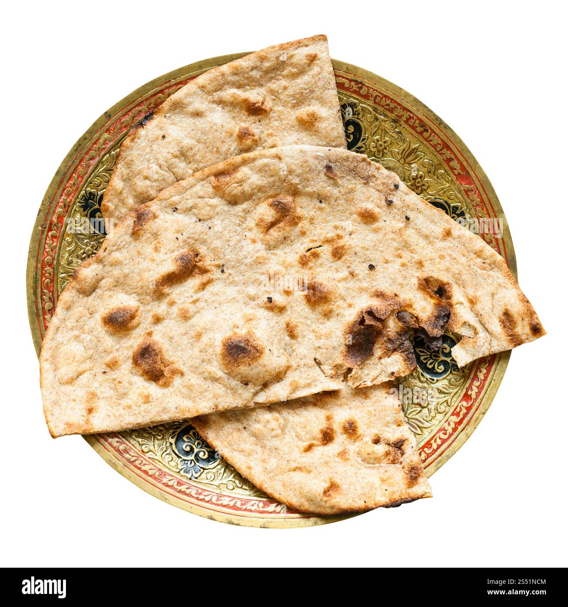

Tandoori Roti
⭐⭐⭐⭐⭐ 4.8 Rating | ⏱ 10 Minutes | 🍽 4 Servings
Category
Lunch / Dinner
Difficulty
Easy
Calories
380 kcal
Cooking Style
Tempered
📋 Ingredients
- 2 cups whole wheat flour (atta)
- 1/2 cup curd/yogurt
- 1/2 tsp baking powder
- 1 bay leaf
- 1 inch cinnamon stick
- water
- salt
- melted ghee or butter for brushing
🍳 Required Utensils
- Cast-iron tawa (flat pan with handle)
- tongs
- heavy-bottomed pot/cooker
- rolling pin
- mixing bowls
📖 Introduction
Tandoori Roti paired with Ghee Rice creates a classic Indian thali staple combination—combining smoky, charred whole wheat flatbreads with rich, buttery, spice-infused rice.
🔬 Principle
Tandoori Roti Relies on high-temperature dry heat to rapidly expand air pockets within a well-hydrated whole wheat dough, producing a crisp exterior with a soft, chewy interior. Ghee Rice: Uses fat-soluble spice extraction and brief grain-roasting in ghee to seal surface starches, ensuring long, distinct grains steeped in clarified butter.
👨🍳 Procedure
- Prepare Dough & Drain Rice
- Knead atta, curd, baking powder, salt, and water into a soft dough.
- Cover and rest for 30 minutes.
- Meanwhile, wash basmati rice and drain completely.
- Prepare Ghee Rice Base
- In a pot, heat 2 tbsp ghee.
- Fry cashews, raisins, and half the sliced onions until golden; remove for garnish.
- Add whole spices and remaining onions to the pot; sauté until translucent.
- Add drained rice to the pot and gently roast for 2 minutes.
- Add 3 cups hot water and salt.
- Add the drained rice to the pot.
- Cover and simmer for 8–10 minutes until water is absorbed, then let rest sealed off the heat for 10 minutes.
- Roll & Water Tandoori Roti
- Divide dough into balls.
- Roll into oval shapes.
- Generously smear water across one entire side of the rolled dough.
- Cook Roti on Iron Tawa
- Place the wet side down onto a smoking-hot cast-iron tawa.
- Once bubbles form, flip the tawa upside down directly over an open gas flame to char the top surface.
- Scrape off, brush with ghee, and serve hot.
⚠ Precautions
- High overall caloric and saturated fat density.
- Those with gluten sensitivity or strict cholesterol management should monitor portion sizes.
💡 Chef Tips
- Use a traditional iron tawa for Tandoori Roti. Non-stick pans will not allow the wet dough to stick when inverted over the flame.
- Never skip the 10-minute resting period for ghee rice; opening it too early causes the delicate basmati grains to break.
- Pair both with a rich, gravied curry (like Paneer Butter Masala or Dal Makhani) to bridge the dry texture of the roti and the richness of the rice.
🥗 Nutrition Facts
| Nutrient | Amount |
|---|---|
| Calories | 520 kcal |
| Protein | 11 g |
| Carbohydrates | 74 g |
| Fat | 20 g |
| Fiber | 6 g |
🍽 Serving Suggestions
- Serve alongside rich gravies such as Butter Chicken, Dal Makhani, Paneer Pasanda, or Mixed Veg Handi.
- Accompany with pickled onions (laccha pyaz), mint chutney, and fresh cucumber raita.
🌿 Health Benefits
- Whole wheat roti provides complex carbohydrates and dietary fiber. Ghee offers essential fat-soluble vitamins (A, E, K) and aids in nutrient absorption.
✅ Result
A contrasting dual-bread and rice meal offering smoky, slightly charred whole-wheat rotis paired with velvety, aromatic, cashew-topped ghee rice.
🎥 Watch Recipe Video
Learn the complete recipe by watching the step-by-step video.
▶ Watch on YouTube